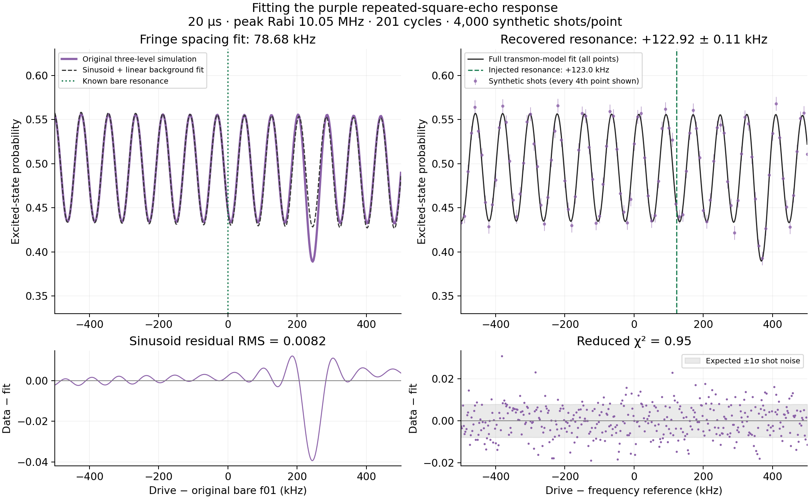
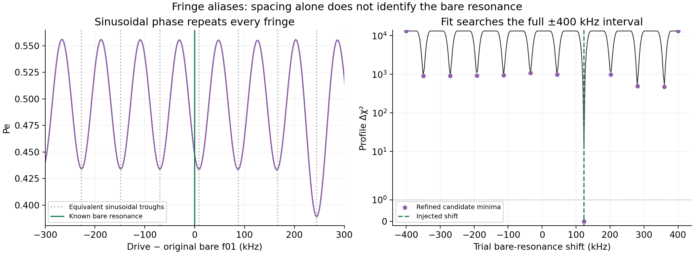

The simple sinusoidal fit finds a fringe spacing of 78.682 kHz. A full calibrated transmon-model fit finds the original simulation's bare resonance at -0.000000 kHz relative to its input reference. The independent synthetic shot-noise example recovers 122.917 ± 0.111 kHz for an injected shift of 123.000 kHz. The quoted uncertainty is a local 1σ statistical estimate under the assumed model.

The source is the previously saved three-level purple response at peak Rabi 10.05 MHz, duration 20 μs, and 201 complete square-echo cycles. The original grid has 401 microwave frequencies spanning ±500 kHz. The exact same pulse timings remain fixed throughout every frequency scan and every trial fit. The model includes T1=43.8 μs, T2=7.6 μs, and anharmonicity −216 MHz.
The descriptive fringe fit is
Here x is in MHz, q is in μs, and the fringe spacing is 1/q MHz. For each trial q in 8–18 μs, the four linear coefficients are optimized; the lowest squared residual is then refined. The fit gives q=12.709434 μs, compared with the ideal small-detuning prediction 2T/π=12.732395 μs. The predicted ideal spacing is 78.540 kHz. These are frequency-axis fringes; q is not a temporal oscillation frequency.
Its fitted troughs occur at 8.837 kHz + n × 78.682 kHz. Those repeating phase locations do not directly give the bare resonance. Systematic residuals of RMS 0.00819 show that a single cosine does not capture the full three-level response, including drive-induced shifts and its varying envelope.
To estimate the bare frequency, the second fit uses
The response is recomputed using exact Lindblad matrix exponentials for each trial s. Readout offset and positive gain are fitted too; the calibrated drive, timing, anharmonicity and coherence parameters are held fixed. The fit searches 241 trial shifts from −400 to +400 kHz and refines every sampled local minimum. It is not initialized at the injected answer. All candidate minima are saved.

The shot-noise data are generated by translating the simulated bare resonance by +123 kHz, then drawing binomial counts with 4,000 shots per frequency using seed 1729. This is a total of 1,604,000 synthetic shots, not hardware data. The fit receives the frequency axis, observed probabilities, estimated variances, and the calibrated response function; it does not receive the injected shift. It uses weighted least squares with a positive fitted gain.
| Quantity | Result |
|---|---|
| Injected bare-resonance shift | +123.000 kHz |
| Recovered shift | +122.917 kHz |
| Error from input | -0.083 kHz |
| Local statistical standard error | 0.111 kHz |
| Reduced χ² | 0.946 |
| Fitted gain / offset | 0.99840 / +0.00123 |
| Next candidate minimum Δχ² | 481.08 |
The frequency uncertainty comes from the local weighted Jacobian with respect to shift, gain and offset. It does not include calibration uncertainty, transmon truncation, other noise processes, or model error. The same three-level model generates and fits this demonstration, so it validates parameter recovery under that model; it does not independently validate the model against hardware.
In particular, the prior comparison found that adding a fourth level changes some repeated-echo populations at this amplitude by about 0.0015. Such mismatch must be considered before interpreting a small statistical error as physical frequency accuracy. A pure sinusoid retains exact frequency aliases; the full model uses its envelope and deviations from exact periodicity to distinguish them in this synthetic example.
Fit parameters and diagnostics · Data, fitted curves, residuals and search profiles · Inspectable CSV · Configuration and source hashes
PYTHONPATH=. .venv/bin/python scripts/fit_rotary_echo_results.py